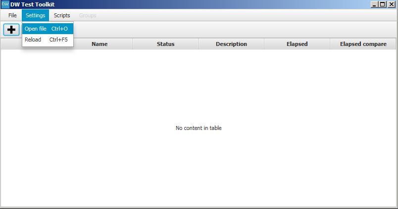
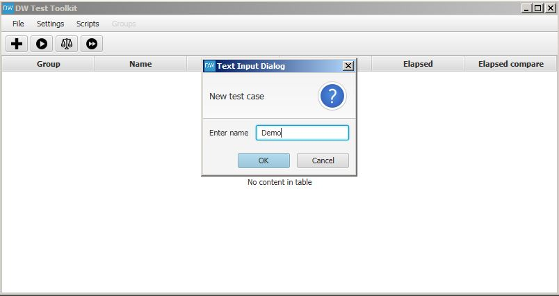
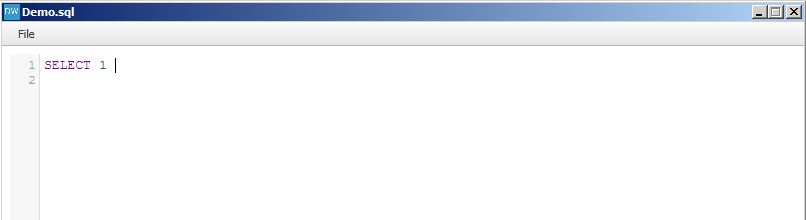
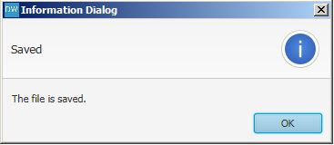
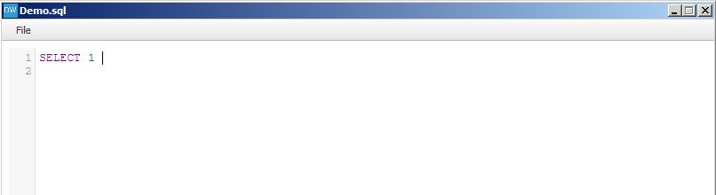
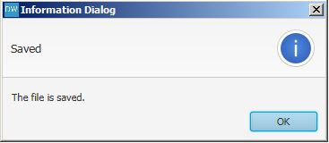
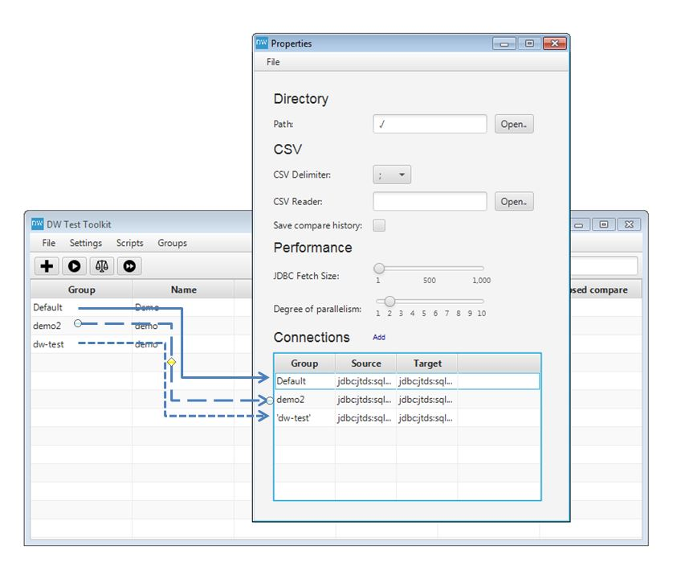

Welcome to DW Test Toolkit.
Data Warehouse Test Toolkit is made to assist you when testing Data Warehouse and ensure quality. This toolkit allows you to write queries for source and target systems as well as to compare the results and report any differences.
Download/install
Download the latest version, and extract the zip file to your prefered destination.
Java (Oracle) version 8 update 40, or higher is required to run the toolkit. jTds (MS SQL Server) and Oracle JDBC drivers are provided in the distribution.
Run
Navigate to the bin folder, and type
dw-test.bat --gui
To set up connections to source and target databases select Settings->Open file.

Edit the connection string to match your requirements. Save your settings by clicking File->Save, and close the window.

Windows Authentication
To use Windows Authentication with MS SQL Server leave out a user name and password from connection string
and download jTDS from https://sourceforge.net/projects/jtds/
extract the zip file and put the SSO directory in PATH (environment variable). For example C:\jtds-1.3.1-dist\x64\SSO for 64-bit environments, or C:\jtds-1.3.1-dist\x86\SSO for 32-bit.
Test case example
Create your first test case select New test case, and enter name.  This will create a file in [install_dir]/bin/Target/[testcase_name].sql The table is updated with your test case. Right click (Code->Open create target SQL) to edit the query. The query will use the target connection to execute.

Type in a query, and save (File->Save). Click OK to the notification, and close the window.

The query will use the target connection to execute.

Type in a query, and save (File->Save). Click OK to the notification, and close the window.

Create a source query by clicking Code->Open/create source SQL. The file is saved at [install_dir]/bin/Source/[testcase_name].sql
Write a similar query to match the target query. The query will be executed using the source connection.Execute Queries
To execute the test case right click and select Execute on the test case. Use the toolbar to execute all test cases, or the Group menu to execute a group of test cases. Both target and source queries are executed.
Both target and source queries are executed.

Results
The query results are put in the subfolders /Result in Target and Source directory holding the .sql files. To view the results, select Results->Open target data set, for example. This will open the .csv file with your preferred .csv editor.
This will open the .csv file with your preferred .csv editor.
 Modify the csvReader in the settings file (Setting->Open file).
Modify the csvReader in the settings file (Setting->Open file).
To use Excel for example:
csvReader = "C:/Program Files (x86)/Microsoft Office/Office14/excel.exe /e"
 The Status is updated, and the test case is completed with success (same result of queries).
The Status is updated, and the test case is completed with success (same result of queries).
 To see any differences between the source and target results use menu Results->Open difference.
This will open a .csv file placed in /Report folder. Only if there are differences, a difference file is created.
To see any differences between the source and target results use menu Results->Open difference.
This will open a .csv file placed in /Report folder. Only if there are differences, a difference file is created.
Callbacks
Before and After callbacks can be created, before/after a target query is executed. They can be used to start ETL programs etc. The callback file accepts any .bat script code.
Scripts
To automate creating test cases, scripts can be used. Groovy scripts can be placed into the directory bin/Scripts of the install directory.
A model object is passed to the script at execution time. The model contains the information on mapping source and target databases provided by the model.csv file. Here is a model illustration.
 To execute a script go to Scripts->Run [script name].groovy
To execute a script go to Scripts->Run [script name].groovy
See the scripts in the distribution for examples.
Multiple Connections Sets
If you name our test cases [group]#[test case] it will match your queries to a group connection set. If no group is put in the test case name, the default connections will be used.

Here is an example of naming a test case to be put into a specific group.

Help
You can get help by writing to dw-test-toolkit@googlegroups.com
Alternatives
NBi is an alternative to DW Test Toolkit. NBi is targeted for the Microsoft platform. For more information visit: http://www.nbi.io/